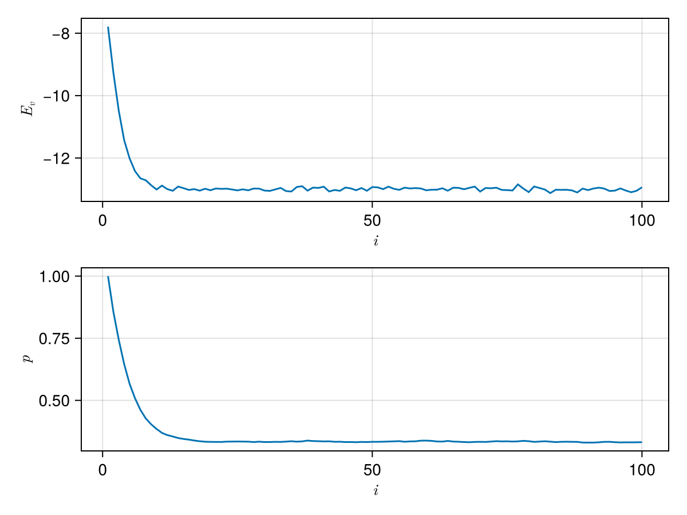
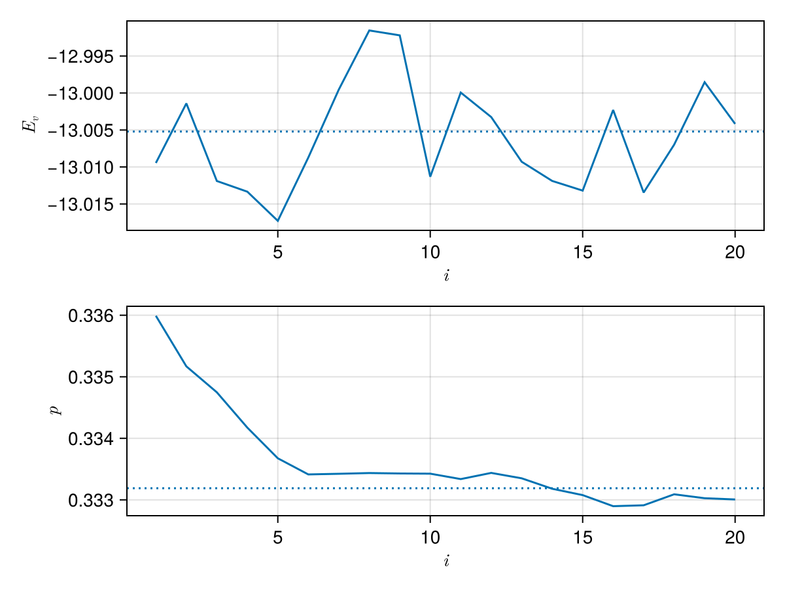

Gutzwiller


importance sampling and variational Monte Carlo for Rimu.jl
Installation
Gutzwiller.jl is not yet registered. To install it, run
import Pkg; Pkg.add("https://github.com/mtsch/Gutzwiller.jl")Usage guide
using Rimuusing Gutzwillerusing CairoMakieusing LaTeXStringsFirst, we set up a starting address and a Hamiltonian
addr = near_uniform(BoseFS{10,10})H = HubbardReal1D(addr; u=2.0)HubbardReal1D(fs"|1 1 1 1 1 1 1 1 1 1⟩"; u=2.0, t=1.0)In this example, we'll set up a Gutzwiller ansatz to importance-sample the Hamiltonian.
ansatz = GutzwillerAnsatz(H)GutzwillerAnsatz{Rimu.BitStringAddresses.BoseFS{10, 10, Rimu.BitStringAddresses.BitString{19, 1, UInt32}}, Float64, Rimu.Hamiltonians.HubbardReal1D{Float64, Rimu.BitStringAddresses.BoseFS{10, 10, Rimu.BitStringAddresses.BitString{19, 1, UInt32}}, 2.0, 1.0}}(HubbardReal1D(fs"|1 1 1 1 1 1 1 1 1 1⟩"; u=2.0, t=1.0))An ansatz is a struct that given a set of parameters and an address, produces the value it would have if it was a vector.
ansatz(addr, [1.0])1.0In addition, the function val_and_grad can be used to compute both the value and its gradient with respect to the parameters.
val_and_grad(ansatz, addr, [1.0])(1.0, [-0.0])Deterministic optimization
For effective importance sampling, we want the ansatz to be as good of an approximation to the ground state of the Hamiltonian as possible. As the value of the Rayleigh quotient of a given ansatz is always larger than the Hamiltonian's ground state energy, we can use an optimization algorithm to find the paramters that minimize its energy.
When the basis of the Hamiltonian is small enough to fit into memory, it's best to use the LocalEnergyEvaluator
le = LocalEnergyEvaluator(H, ansatz)LocalEnergyEvaluator(HubbardReal1D(fs"|1 1 1 1 1 1 1 1 1 1⟩"; u=2.0, t=1.0), GutzwillerAnsatz{Rimu.BitStringAddresses.BoseFS{10, 10, Rimu.BitStringAddresses.BitString{19, 1, UInt32}}, Float64, Rimu.Hamiltonians.HubbardReal1D{Float64, Rimu.BitStringAddresses.BoseFS{10, 10, Rimu.BitStringAddresses.BitString{19, 1, UInt32}}, 2.0, 1.0}}(HubbardReal1D(fs"|1 1 1 1 1 1 1 1 1 1⟩"; u=2.0, t=1.0)))which can be used to evaulate the value of the Rayleigh quotient (or its gradient) for given parameters. In the case of the Gutzwiller ansatz, there is only one parameter.
le([1.0])-7.825819465047338Like before, we can use val_and_grad to also evaluate its gradient.
val_and_grad(le, [1.0])(-7.825819465047338, [10.61414777614323])Now, let's plot the energy landscape for this particular case
begin fig = Figure() ax = Axis(fig[1, 1]; xlabel=L"p", ylabel=L"E") ps = range(0, 2; length=100) Es = [le([p]) for p in ps] lines!(ax, ps, Es) figend
To find the minimum, pass le to optimize from Optim.jl
using Optim, NLSolversBaseopt_nelder = optimize(le, [1.0]) * Status: success
* Candidate solution
Final objective value: -1.300521e+01
* Found with
Algorithm: Nelder-Mead
* Convergence measures
√(Σ(yᵢ-ȳ)²)/n ≤ 1.0e-08
* Work counters
Seconds run: 1 (vs limit Inf)
Iterations: 11
f(x) calls: 25
To take advantage of the gradients, wrap the evaluator in only_fg!. This will usually reduce the number of steps needed to reach the minimum.
opt_lbgfs = optimize(only_fg!(le), [1.0]) * Status: success
* Candidate solution
Final objective value: -1.300521e+01
* Found with
Algorithm: L-BFGS
* Convergence measures
|x - x'| = 1.01e-08 ≰ 0.0e+00
|x - x'|/|x'| = 3.04e-08 ≰ 0.0e+00
|f(x) - f(x')| = 1.46e-11 ≰ 0.0e+00
|f(x) - f(x')|/|f(x')| = 1.12e-12 ≰ 0.0e+00
|g(x)| = 1.96e-10 ≤ 1.0e-08
* Work counters
Seconds run: 2 (vs limit Inf)
Iterations: 8
f(x) calls: 14
∇f(x) calls: 14
∇f(x)ᵀv calls: 0
We can inspect the parameters and the value at the minimum as
opt_lbgfs.minimizer, opt_lbgfs.minimum([0.3331889106034745], -13.005208186389002)Variational quantum Monte Carlo
When the Hamiltonian is too large to store its full basis in memory, we can use variational QMC to sample addresses from the Hilbert space and evaluate their energy at the same time. An important paramter we have tune is the number steps. More steps will give us a better approximation of the energy, but take longer to evaluate. Not taking enough samples can also result in producing a biased result. Consider the following.
p0 = [1.0]@time kinetic_vqmc(H, ansatz, p0; steps=1e2)KineticVQMCResult
walkers: 1
samples: 100
local energy: -8.3937 ± 0.52403@time kinetic_vqmc(H, ansatz, p0; steps=1e5)KineticVQMCResult
walkers: 1
samples: 100000
local energy: -7.8301 ± 0.016663@time kinetic_vqmc(H, ansatz, p0; steps=1e7)KineticVQMCResult
walkers: 1
samples: 10000000
local energy: -7.8255 ± 0.001697For this simple example, 1e2 steps gives an energy that is significantly higher, while 1e7 takes too long. 1e5 seems to work well enough. For more convenient evaluation, we wrap VQMC into a struct that behaves much like the LocalEnergyEvaluator.
qmc = KineticVQMC(H, ansatz; samples=1e4)KineticVQMC(
HubbardReal1D(fs"|1 1 1 1 1 1 1 1 1 1⟩"; u=2.0, t=1.0),
GutzwillerAnsatz{Rimu.BitStringAddresses.BoseFS{10, 10, Rimu.BitStringAddresses.BitString{19, 1, UInt32}}, Float64, Rimu.Hamiltonians.HubbardReal1D{Float64, Rimu.BitStringAddresses.BoseFS{10, 10, Rimu.BitStringAddresses.BitString{19, 1, UInt32}}, 2.0, 1.0}}(HubbardReal1D(fs"|1 1 1 1 1 1 1 1 1 1⟩"; u=2.0, t=1.0));
steps=10000,
walkers=1,
equilibration=1000,
)qmc([1.0]), le([1.0])(-7.871546068648087, -7.825819465047338)Because the output of this procedure is noisy, optimizing it with Optim.jl will not work. Instead, we use stochastic reconfiguration, which estimates the gradient together with the metric tensor of the ansatz from the same samples, and uses the metric to choose well-scaled steps.
sr_result = stochastic_reconfiguration(qmc, [1.0])StochasticReconfigurationResult
iterations: 100
converged: false (iterations)
last value: -12.936201174170094 ± 0.05967282765110098
last params: [0.331693178545606]While stochastic_reconfiguration attempts to determine if the optimization converged, it will generally not detect convergence due to the noise in the QMC evaluation. The best way to determine convergence is to plot the results. sr_result can be converted to a DataFrame.
sr_df = DataFrame(sr_result)100×8 DataFrame
Row │ τ shift iter param value error gradient param_delta
│ Float64 Float64 Int64 SArray… Float64 Float64 SArray… SArray…
─────┼─────────────────────────────────────────────────────────────────────────────────────────
1 │ 0.05 0.001 1 [1.0] -7.78919 0.048199 [10.5294] [-0.14383]
2 │ 0.05 0.001 2 [0.85617] -9.26574 0.0475581 [9.90432] [-0.112832]
3 │ 0.05 0.001 3 [0.743338] -10.4886 0.0480646 [9.92921] [-0.0975735]
4 │ 0.05 0.001 4 [0.645765] -11.428 0.0461014 [8.91548] [-0.0789046]
5 │ 0.05 0.001 5 [0.56686] -12.0087 0.048242 [7.15949] [-0.0580394]
6 │ 0.05 0.001 6 [0.50882] -12.4171 0.0484922 [6.54566] [-0.0466771]
7 │ 0.05 0.001 7 [0.462143] -12.65 0.0438906 [4.89125] [-0.0348621]
8 │ 0.05 0.001 8 [0.427281] -12.7108 0.0434147 [3.67147] [-0.0236687]
9 │ 0.05 0.001 9 [0.403613] -12.8704 0.0413238 [3.16711] [-0.0187281]
10 │ 0.05 0.001 10 [0.384885] -13.0082 0.040429 [2.80329] [-0.0157399]
11 │ 0.05 0.001 11 [0.369145] -12.8831 0.0509024 [1.63027] [-0.00896482]
12 │ 0.05 0.001 12 [0.36018] -12.9956 0.0571247 [1.04276] [-0.00554302]
13 │ 0.05 0.001 13 [0.354637] -13.0482 0.0495189 [1.21832] [-0.00615704]
14 │ 0.05 0.001 14 [0.34848] -12.913 0.055934 [0.772206] [-0.00380939]
15 │ 0.05 0.001 15 [0.34467] -12.9645 0.0545169 [0.572587] [-0.00269237]
16 │ 0.05 0.001 16 [0.341978] -13.0211 0.0510641 [0.733948] [-0.00364413]
17 │ 0.05 0.001 17 [0.338334] -12.9959 0.0487224 [0.564889] [-0.00272651]
18 │ 0.05 0.001 18 [0.335607] -13.0442 0.0468583 [0.438824] [-0.00203035]
19 │ 0.05 0.001 19 [0.333577] -12.9829 0.0548686 [0.119283] [-0.00055065]
20 │ 0.05 0.001 20 [0.333026] -13.0314 0.0494419 [0.0654169] [-0.000323956]
21 │ 0.05 0.001 21 [0.332702] -12.9752 0.0458431 [0.0126264] [-6.0272e-5]
22 │ 0.05 0.001 22 [0.332642] -12.9878 0.0583582 [-0.276391] [0.00127455]
23 │ 0.05 0.001 23 [0.333917] -12.9807 0.0526973 [-0.0541363] [0.000258361]
24 │ 0.05 0.001 24 [0.334175] -13.0065 0.0550042 [-0.0683896] [0.000317474]
25 │ 0.05 0.001 25 [0.334493] -13.0356 0.0510684 [0.0787545] [-0.00037855]
26 │ 0.05 0.001 26 [0.334114] -13.0023 0.0549745 [0.0566057] [-0.000267448]
27 │ 0.05 0.001 27 [0.333847] -13.0342 0.0490645 [0.342106] [-0.00163115]
28 │ 0.05 0.001 28 [0.332215] -12.9766 0.0540539 [-0.332136] [0.00156629]
29 │ 0.05 0.001 29 [0.333782] -12.9791 0.0513777 [0.317681] [-0.0015014]
30 │ 0.05 0.001 30 [0.33228] -13.0411 0.0525582 [-0.0438308] [0.000207811]
31 │ 0.05 0.001 31 [0.332488] -13.0522 0.0430475 [-0.116731] [0.000551686]
32 │ 0.05 0.001 32 [0.33304] -13.0048 0.0447592 [0.0341556] [-0.000166685]
33 │ 0.05 0.001 33 [0.332873] -12.9568 0.0494825 [-0.238318] [0.00107154]
34 │ 0.05 0.001 34 [0.333945] -13.0568 0.0514973 [-0.324521] [0.00161937]
35 │ 0.05 0.001 35 [0.335564] -13.0723 0.0514513 [0.36357] [-0.00177051]
36 │ 0.05 0.001 36 [0.333793] -12.9269 0.0596572 [-0.244845] [0.00112293]
37 │ 0.05 0.001 37 [0.334916] -12.9021 0.0648278 [-0.709976] [0.00321463]
38 │ 0.05 0.001 38 [0.338131] -13.044 0.0425012 [0.367516] [-0.00180482]
39 │ 0.05 0.001 39 [0.336326] -12.9473 0.053676 [0.125045] [-0.000605155]
40 │ 0.05 0.001 40 [0.335721] -12.9568 0.0535026 [0.198493] [-0.000943816]
41 │ 0.05 0.001 41 [0.334777] -12.9179 0.0563841 [-0.11428] [0.000524272]
42 │ 0.05 0.001 42 [0.335302] -13.0705 0.0465395 [0.420787] [-0.00200121]
43 │ 0.05 0.001 43 [0.3333] -13.0235 0.0479285 [-0.0368121] [0.00017215]
44 │ 0.05 0.001 44 [0.333472] -13.0494 0.044514 [0.250982] [-0.00119531]
45 │ 0.05 0.001 45 [0.332277] -12.9449 0.0508349 [-0.0146915] [6.74575e-5]
46 │ 0.05 0.001 46 [0.332345] -12.9718 0.0524507 [0.16742] [-0.000733347]
47 │ 0.05 0.001 47 [0.331611] -13.0308 0.0482339 [-0.251307] [0.0011982]
48 │ 0.05 0.001 48 [0.332809] -12.9605 0.049429 [0.144388] [-0.000678115]
49 │ 0.05 0.001 49 [0.332131] -13.0485 0.0555769 [-0.236853] [0.00111313]
50 │ 0.05 0.001 50 [0.333244] -12.9288 0.0476138 [0.0247041] [-0.000111649]
51 │ 0.05 0.001 51 [0.333133] -12.9395 0.0490913 [-0.110487] [0.000506634]
52 │ 0.05 0.001 52 [0.333639] -12.996 0.0487327 [-0.162245] [0.000742469]
53 │ 0.05 0.001 53 [0.334382] -12.9161 0.0574263 [-0.142708] [0.000669939]
54 │ 0.05 0.001 54 [0.335052] -12.985 0.0629941 [-0.195931] [0.000908384]
55 │ 0.05 0.001 55 [0.33596] -13.0185 0.0448559 [0.522539] [-0.00257481]
56 │ 0.05 0.001 56 [0.333385] -12.9481 0.0566587 [-0.341827] [0.00152041]
57 │ 0.05 0.001 57 [0.334906] -12.9744 0.052818 [-0.0642247] [0.000305678]
58 │ 0.05 0.001 58 [0.335212] -12.9619 0.0535879 [-0.566745] [0.00262021]
59 │ 0.05 0.001 59 [0.337832] -12.9738 0.0562703 [-0.046738] [0.000211307]
60 │ 0.05 0.001 60 [0.338043] -13.0324 0.0400982 [0.210549] [-0.00106923]
61 │ 0.05 0.001 61 [0.336974] -13.0147 0.0519889 [0.500603] [-0.00239399]
62 │ 0.05 0.001 62 [0.33458] -13.0129 0.0520529 [0.0910745] [-0.000447262]
63 │ 0.05 0.001 63 [0.334133] -12.9678 0.0558077 [-0.549151] [0.00256677]
64 │ 0.05 0.001 64 [0.336699] -13.0461 0.0409815 [0.493037] [-0.00247865]
65 │ 0.05 0.001 65 [0.334221] -12.9505 0.0525088 [0.17493] [-0.000836743]
66 │ 0.05 0.001 66 [0.333384] -12.9551 0.0537328 [0.244225] [-0.00110457]
67 │ 0.05 0.001 67 [0.332279] -12.9993 0.0458124 [0.146191] [-0.000680102]
68 │ 0.05 0.001 68 [0.331599] -12.9547 0.056223 [-0.239507] [0.00114682]
69 │ 0.05 0.001 69 [0.332746] -12.914 0.0578283 [-0.0839388] [0.000392656]
70 │ 0.05 0.001 70 [0.333139] -13.0744 0.0527763 [0.0906161] [-0.000425367]
71 │ 0.05 0.001 71 [0.332713] -12.9593 0.0537576 [-0.302949] [0.00151185]
72 │ 0.05 0.001 72 [0.334225] -12.9683 0.0565454 [-0.326526] [0.00158515]
73 │ 0.05 0.001 73 [0.33581] -12.9496 0.0564776 [0.205679] [-0.000932924]
74 │ 0.05 0.001 74 [0.334877] -13.021 0.0592081 [-0.0822501] [0.000372704]
75 │ 0.05 0.001 75 [0.33525] -13.0269 0.0497172 [0.215876] [-0.00102182]
76 │ 0.05 0.001 76 [0.334228] -13.0392 0.0557109 [-0.1707] [0.000823587]
77 │ 0.05 0.001 77 [0.335052] -12.8434 0.0538227 [-0.419492] [0.00200754]
78 │ 0.05 0.001 78 [0.337059] -12.9773 0.0521239 [0.298248] [-0.00135372]
79 │ 0.05 0.001 79 [0.335706] -13.091 0.0438654 [0.575972] [-0.00272654]
80 │ 0.05 0.001 80 [0.332979] -12.9115 0.0589901 [-0.263735] [0.00126173]
81 │ 0.05 0.001 81 [0.334241] -12.9592 0.0569695 [-0.257109] [0.0011707]
82 │ 0.05 0.001 82 [0.335412] -13.0095 0.046488 [0.326281] [-0.00154368]
83 │ 0.05 0.001 83 [0.333868] -13.1227 0.0489504 [0.412306] [-0.001841]
84 │ 0.05 0.001 84 [0.332027] -13.0159 0.0539929 [-0.230891] [0.00113375]
85 │ 0.05 0.001 85 [0.333161] -13.0194 0.05116 [-0.0827483] [0.000389088]
86 │ 0.05 0.001 86 [0.33355] -13.0155 0.0500451 [0.0829506] [-0.000395107]
87 │ 0.05 0.001 87 [0.333155] -13.0353 0.0511407 [0.0395402] [-0.000194032]
88 │ 0.05 0.001 88 [0.332961] -13.1024 0.0433586 [0.56462] [-0.00267324]
89 │ 0.05 0.001 89 [0.330287] -12.9794 0.0475524 [0.0438497] [-0.000210146]
90 │ 0.05 0.001 90 [0.330077] -13.0262 0.0499674 [-0.0149639] [7.25635e-5]
91 │ 0.05 0.001 91 [0.33015] -12.9763 0.0559544 [-0.235228] [0.00110287]
92 │ 0.05 0.001 92 [0.331253] -12.9485 0.0581504 [-0.380302] [0.00176994]
93 │ 0.05 0.001 93 [0.333023] -12.9778 0.0480472 [-0.0397179] [0.000187652]
94 │ 0.05 0.001 94 [0.33321] -13.0557 0.0428387 [0.322928] [-0.00160607]
95 │ 0.05 0.001 95 [0.331604] -13.0426 0.0542824 [0.185769] [-0.000864678]
96 │ 0.05 0.001 96 [0.33074] -12.9723 0.0444371 [-0.0911713] [0.000423323]
97 │ 0.05 0.001 97 [0.331163] -13.0412 0.0499799 [0.00971698] [-4.59776e-5]
98 │ 0.05 0.001 98 [0.331117] -13.0951 0.0428448 [-0.0316331] [0.000148963]
99 │ 0.05 0.001 99 [0.331266] -13.0483 0.0552124 [-0.0894841] [0.000427317]
100 │ 0.05 0.001 100 [0.331693] -12.9362 0.0596728 [-0.95143] [0.0042973]To plot it, we can either work with the DataFrame or access the fields directly
begin fig = Figure() ax1 = Axis(fig[1, 1]; xlabel=L"i", ylabel=L"E_v") ax2 = Axis(fig[2, 1]; xlabel=L"i", ylabel=L"p") lines!(ax1, sr_df.iter, sr_df.value) lines!(ax2, first.(sr_result.param)) figend
We see from the plot that the value of the energy is fluctuating around what appears to be the minimum. While the parameter estimate here is probably good enough for importance sampling, we can refine the result by creating a new KineticVQMC structure with increased samples and use it to refine the result. Here, we can pass the previous result sr_result in place of the initial parameters, which will continue the computation where the previous one left off.
qmc2 = KineticVQMC(H, ansatz; samples=1e6)sr_result2 = stochastic_reconfiguration(qmc2, sr_result; maxiter=20)StochasticReconfigurationResult
iterations: 20
converged: false (iterations)
last value: -13.004172790610538 ± 0.005656198280588205
last params: [0.3330067494744865]Now, let's plot the refined result next to the minimum found by Optim.jl
begin fig = Figure() ax1 = Axis(fig[1, 1]; xlabel=L"i", ylabel=L"E_v") ax2 = Axis(fig[2, 1]; xlabel=L"i", ylabel=L"p") lines!(ax1, sr_result2.value) hlines!(ax1, [opt_lbgfs.minimum]; linestyle=:dot) lines!(ax2, first.(sr_result2.param)) hlines!(ax2, opt_lbgfs.minimizer; linestyle=:dot) figend
Importance sampling
Finally, we have a good estimate for the parameter to use with importance sampling. Gutzwiller.jl provides AnsatzSampling, which is similar to GutzwillerSampling from Rimu, but can be used with different ansatze.
p = final_params(sr_result2)G = AnsatzSampling(H, ansatz, p)AnsatzSampling{false, Float64, 1, GutzwillerAnsatz{Rimu.BitStringAddresses.BoseFS{10, 10, Rimu.BitStringAddresses.BitString{19, 1, UInt32}}, Float64, Rimu.Hamiltonians.HubbardReal1D{Float64, Rimu.BitStringAddresses.BoseFS{10, 10, Rimu.BitStringAddresses.BitString{19, 1, UInt32}}, 2.0, 1.0}}, Rimu.Hamiltonians.HubbardReal1D{Float64, Rimu.BitStringAddresses.BoseFS{10, 10, Rimu.BitStringAddresses.BitString{19, 1, UInt32}}, 2.0, 1.0}}(HubbardReal1D(fs"|1 1 1 1 1 1 1 1 1 1⟩"; u=2.0, t=1.0), GutzwillerAnsatz{Rimu.BitStringAddresses.BoseFS{10, 10, Rimu.BitStringAddresses.BitString{19, 1, UInt32}}, Float64, Rimu.Hamiltonians.HubbardReal1D{Float64, Rimu.BitStringAddresses.BoseFS{10, 10, Rimu.BitStringAddresses.BitString{19, 1, UInt32}}, 2.0, 1.0}}(HubbardReal1D(fs"|1 1 1 1 1 1 1 1 1 1⟩"; u=2.0, t=1.0)), [0.33313135995375487])This can now be used with FCIQMC. Let's compare the importance sampled time series to a non-importance sampled one.
prob_standard = ProjectorMonteCarloProblem(H; target_walkers=15, last_step=2000)sim_standard = solve(prob_standard)shift_estimator(sim_standard; skip=1000)BlockingResult{Float64}
mean = -11.5 ± 0.6
with uncertainty of ± 0.07717161855628778
from 31 blocks after 5 transformations (k = 6).
prob_sampled = ProjectorMonteCarloProblem(G; target_walkers=15, last_step=2000)sim_sampled = solve(prob_sampled)shift_estimator(sim_sampled; skip=1000)BlockingResult{Float64}
mean = -12.85 ± 0.41
with uncertainty of ± 0.052725721184404765
from 31 blocks after 5 transformations (k = 6).
Note that the lower energy estimate in the sampled case is probably due to a reduced population control bias. The effect importance sampling has on the statistic can be more dramatic for larger systems and beter choices of anstaze.
This page was generated using Literate.jl.